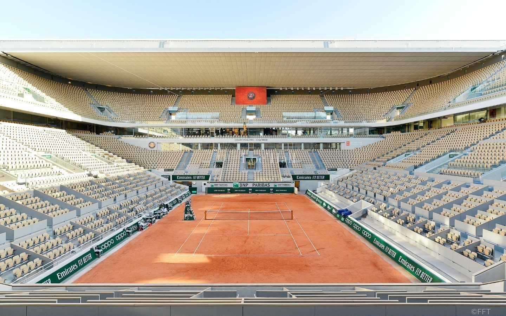
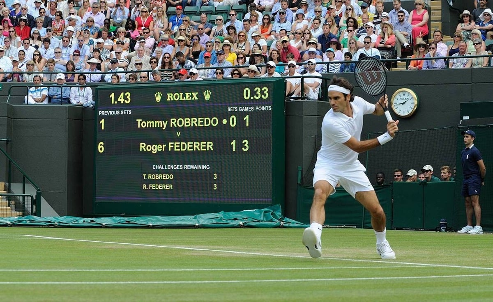
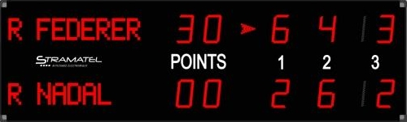
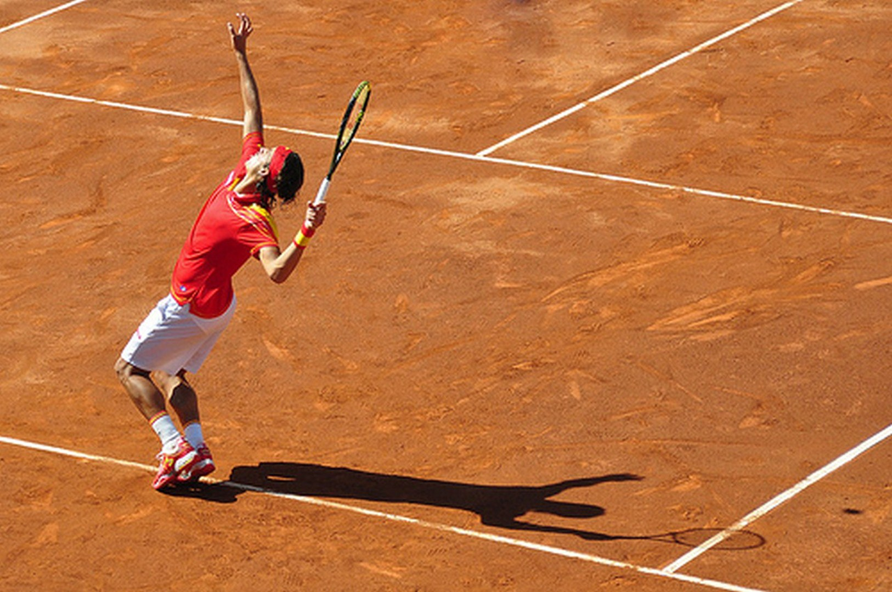

🎾 Règles du Tennis
 Le But du Jeu
Le But du Jeu

Le tennis se joue en simple (un contre un) ou en double (deux contre deux).
Le but est de renvoyer la balle dans le camp adverse sans qu’elle soit reprise correctement.
Le joueur marque un point lorsque son adversaire ne parvient pas à renvoyer la balle dans les limites du terrain.
Le Système de Points

Le score d’un jeu se décompose en points : 15, 30, 40 et jeu.
Si les deux joueurs atteignent 40-40, on appelle cela “égalité”. Le joueur doit alors gagner deux points consécutifs pour remporter le jeu.
Les Sets

Un match se joue en 2 sets gagnants (3 pour les hommes dans les tournois du Grand Chelem).
Le joueur qui remporte 6 jeux avec au moins 2 jeux d’écart gagne le set.
Les Fautes et Services

Le service s’effectue derrière la ligne de fond. Le serveur dispose de deux tentatives.
Une faute est commise lorsque la balle sort du terrain, touche le filet ou rebondit deux fois avant d’être frappée.